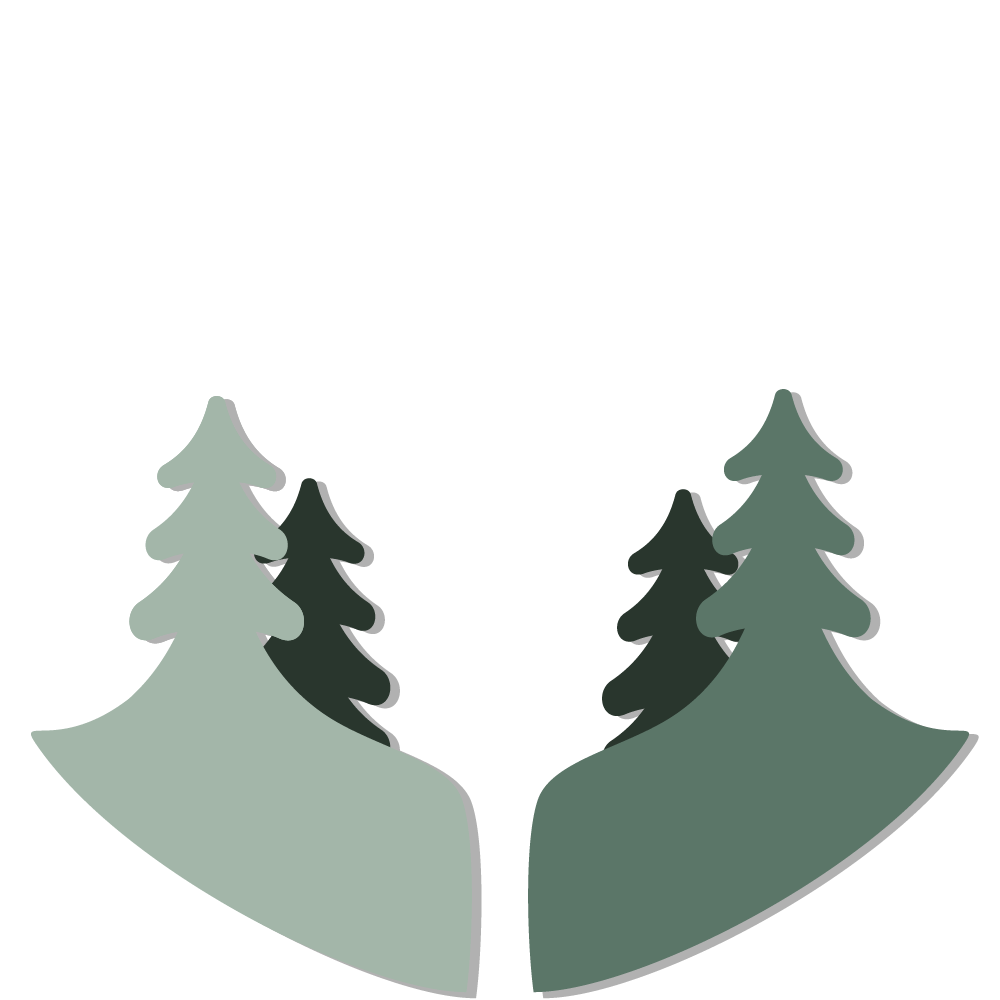

×{{ rmnData[0].apple }}
 ×{{ rmnData[0].packet }}
×{{ rmnData[0].packet }}
×{{ rmnData[0].packet }}
- 観測した人
- {{ rmnData[0].apple }}人
- 観測した電波
- {{ rmnData[0].packet }}シグナル
 {{ rmnData[0].cpuTemp }}℃
{{ rmnData[0].cpuTemp }}℃
 {{ rmnData[0].battery }}%
{{ rmnData[0].battery }}%
- CPU温度
- {{ rmnData[0].cpuTemp }}℃
- バッテリー残量
- {{ rmnData[0].battery }}%
睡眠中...
森見守者とは
森の奥深く、そっと見守る「りもん」という小さな仲間がいます。「りもん」は、森を訪れる者たちの気配を感じ取る、ひとりぼっちのIoT＊です。
太陽が昇り、森に光が満ちると、「りもん」は目を覚まし、ゆっくりと動き出します。 陽の光をいっぱいに浴びて力を蓄え、やがて森の中を歩む人や、ひそやかに通り過ぎるデバイスたちの気配を優しく見つめます。
けれど夜が訪れると、「りもん」は少し疲れて、寝てしまいます。夜の暗がりの中で眠りにつき、雨の日には少し長い眠りにつくこともあります。
それでも、再び朝が来ると、太陽の光とともに「りもん」は目を覚まします。まるで森と共に生きているかのように、森のリズムに合わせて目を閉じ、目を開き、見守り続けるのです。
＊ IoT： Internet of Thingsの略語。インターネットに繋がったモノを意味します。
交信の記録
-
×{{ d.apple }}人
×{{ d.packet }}シグナル
{{ d.cpuTemp }}℃
{{ d.battery }}%